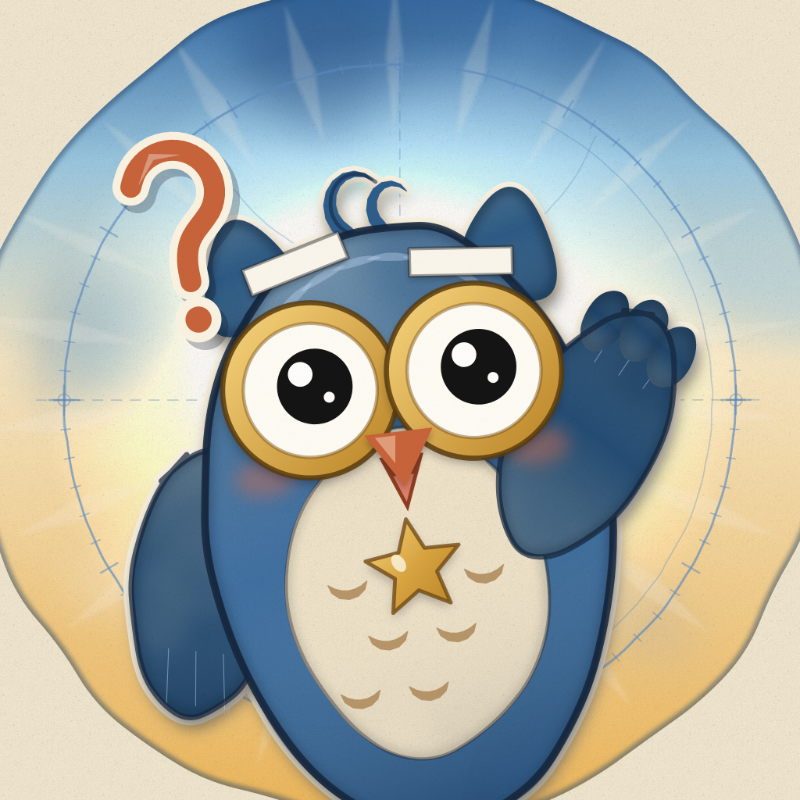

MitoloKids
Cuentos animados para niños curiosos: ciencia, mitos del mundo y yoga. Toca un cuento y presiona ▶.Animated stories for curious kids: science, world myths and yoga. Tap a story and press ▶.
PresentaciónWelcome
El canal en 30 segundos.The channel in 30 seconds.
1Cuentos de cienciaScience stories
Agua, volcanes, estrellas, planetas, elementos y números.Water, volcanoes, stars, planets, elements and numbers.
6 012:00
012:00Gotita y el Cenote MágicoGotita and the Magic Cenote
Gotita es una gota de lluvia que cae en la selva de Yucatán, viaja bajo la tierra por la piedra caliza y descubre un lugar mágico: ¡un cenote!A little raindrop falls on the Yucatán jungle, seeps through the limestone and discovers an underground river: a cenote!
 022:00
022:00Magmi y el Volcán DormilónMagmi and the Sleepy Volcano
Magmi es una gotita de magma que vive muy abajo de la tierra. Un día sube por el volcán Don Goyo, sale volando como lava… ¡y se convierte en piedra! Con los años, esa piedra se vuelve tierra donde crece el maíz.Magmi is a little drop of magma deep inside the Earth. One day the volcano sneezes… and she becomes rock!
 032:00
032:00Chispa y los dibujos del cieloChispa and the Sky Drawings
Chispa es una luciérnaga muy curiosa: ¿las estrellas serán luciérnagas que están muy lejos? El abuelo Tecolote le enseña que las estrellas son soles lejanos, y juntos bordan en el cielo las constelaciones más famosas.A firefly and Grandpa Owl connect the stars: the Big Dipper, Orion and Orion's Belt.
 042:00
042:00Estela y los planetasThe Planets for Kids
Estela es una cometita muy curiosa. Con el permiso del Abuelo Sol, sale a conocer a los ocho planetas, del más cerquita al más lejano… ¡y hasta pasa volando entre los anillos de Saturno!Estela the little comet travels the Solar System and meets every planet, with Grandpa Sun.
 092:00
092:00Tuerquita y la máquina de los elementosThe Chemical Elements for Kids
¿De qué están hechas todas las cosas? Tuerquita, una robotita hecha de tornillos viejos, sube a la torre oxidada de Don Pistón, el inventor. Ahí descubre una máquina gigante con 118 cajoncitos: ¡la tabla periódica! De cada cajón sale un elemento que brilla… y dos hidrógenos con un oxígeno se toman de la mano para hacer una gota de agua.Tuerquita the little robot and Don Pistón discover what everything is made of: the periodic table.
 102:00
102:00Cero y los númerosNumbers for Kids
Cero es un numerito redondo y tímido que cree que no vale nada. Con Áak, la tortuga maya, cuenta con sus amigos del 1 al 9… hasta que llegan diez luciérnagas y descubre que sin él ¡no existe el diez!Zero, the shy little number, learns how much it is worth with a wise Maya turtle. Counting from 1 to 10.
Mitos del mundoWorld myths
Mito, el búho niño, cuenta mitos y lo que hoy sabemos.Mito the owl tells myths and what we know today.
4 052:00
052:00Calisto y la Osa MayorCallisto and the Great Bear
¿Por qué hay dos osas en el cielo? Calisto corría por el bosque más rápido que el viento y cantaba con su hijito Arcas mirando las estrellas. Pero una diosa gruñona se puso celosa y… ¡PUF! Calisto se convirtió en osa. Por fuera cambió… pero por dentro seguía siendo mamá. Hasta que Zeus tomó a los dos osos por la cola y… ¡FIUUU! ¡Arriba, al cielo!A Greek myth: Callisto becomes a bear, and Zeus places her and her son Arcas in the sky as the two bears.
 062:00
062:00Prometeo y el regalo del fuegoPrometheus and the Gift of Fire
Hace mucho tiempo, las personas no tenían fuego y de noche hacía mucho frío. ¡Brrr! Allá arriba, en el Monte Olimpo, los dioses sí tenían fuego… y Prometeo, un titán muy bueno, subió de puntitas, de puntitas, para traerles una chispa.A kind titan brings a spark to people: light, warmth… and hot soup! Air, twigs and heat make fire.
 072:00
072:00Orión y el EscorpiónOrion and the Scorpion
Orión era un cazador enorme que presumía: «¡Soy el más fuerte del mundo!». Pero en la arena vivía alguien muy chiquitito… ¡y le dio un piquetito en el dedo gordo! Mito, la lechucita preguntona, te cuenta este mito griego en 2 minutos de papel animado.The biggest isn't always the strongest: a giant hunter, a tiny scorpion and two constellations.
 082:00
082:00Amaterasu y la cuevaAmaterasu and the Cave
¿Qué pasaría si un día el Sol se escondiera? Amaterasu, la diosa del Sol de Japón, se enoja con su hermano Susanoo, la tormenta, y se esconde en una cueva. ¡El mundo se queda oscuro y frío! Los gallos cantan, la diosa Uzume baila sobre una tina volteada, todos se ríen… y un espejo redondo ayuda a que la luz vuelva.A Japanese myth: the Sun goddess hides in a cave and the world goes dark, until a dance and a mirror bring the light back.
Yoga por el mundoYoga around the world
Sesiones de 5 minutos con Nicté y sus amigos animales.5-minute sessions with Nicté and her animal friends.
2 115:00
115:00Yoga en la selvaKids Yoga: 5 Minutes in the Jungle
¡Haz yoga con Nicté y sus amigos de la selva de Yucatán! Una sesión tranquila de 5 minutos para niños de 4 a 7 años: respiramos, nos estiramos y hacemos posturas de animales. Con cada postura, la selva dibujada a lápiz se llena de color.Animal poses with Nicté in the Mexican jungle: a calm yoga session for kids.
 125:00
125:00Yoga en la IndiaKids Yoga: 5 Minutes in India
¡Yoga por el mundo, episodio 2! Nicté abre su pasaporte de viaje y llega a la India, a la orilla del río Ganges en Rishikesh. Una sesión tranquila de 5 minutos para niños de 4 a 7 años con el tigre, el elefante, el pavo real y más amigos. Con cada postura, el paisaje dibujado a lápiz se llena de color.Animal poses with Nicté by the Ganges river: a calm yoga session for kids.